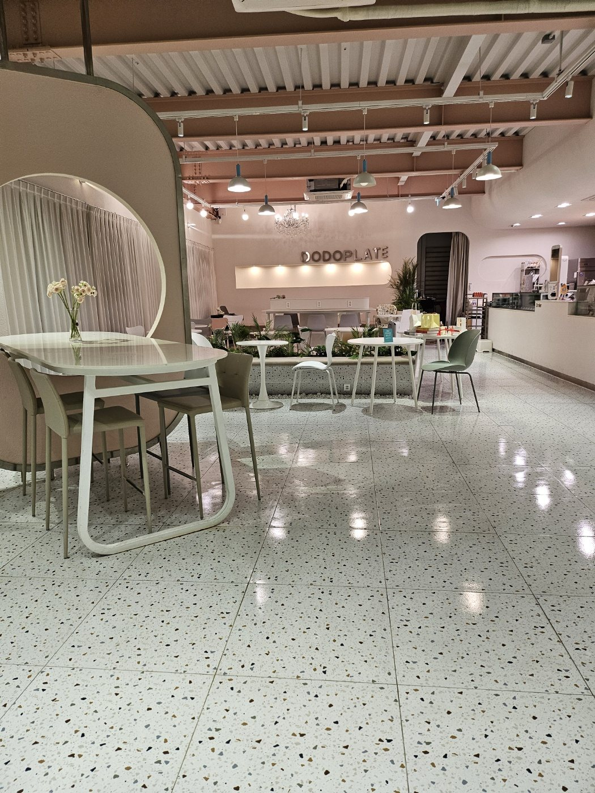
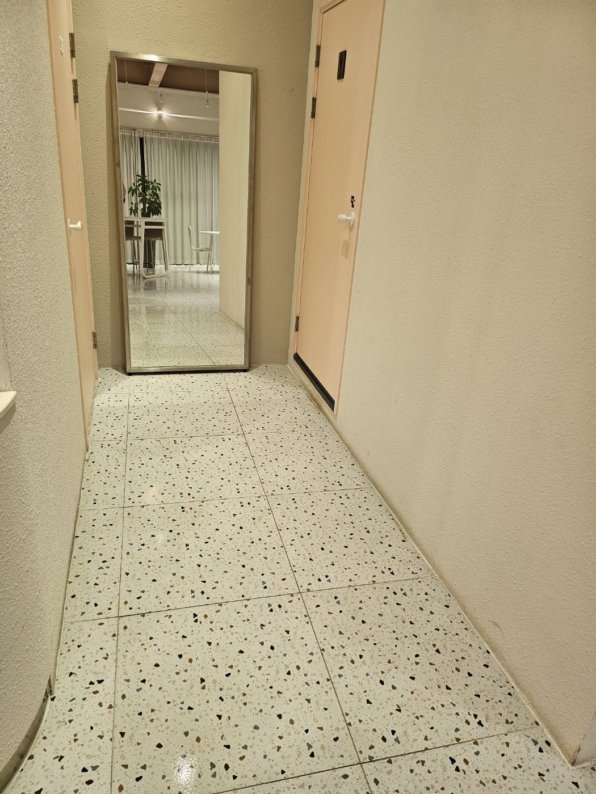
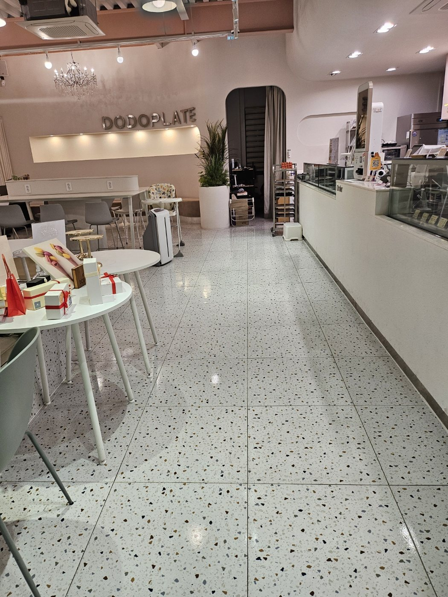
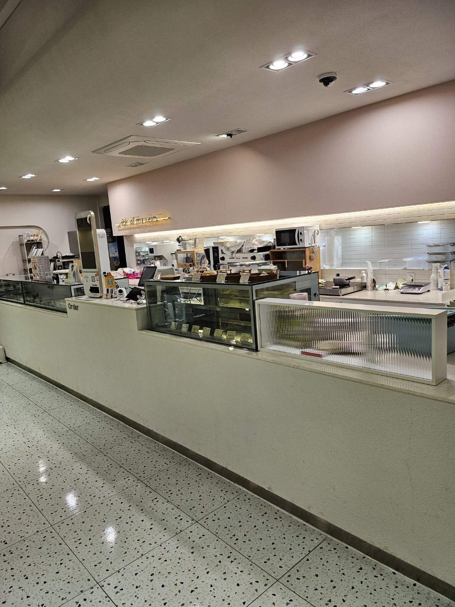
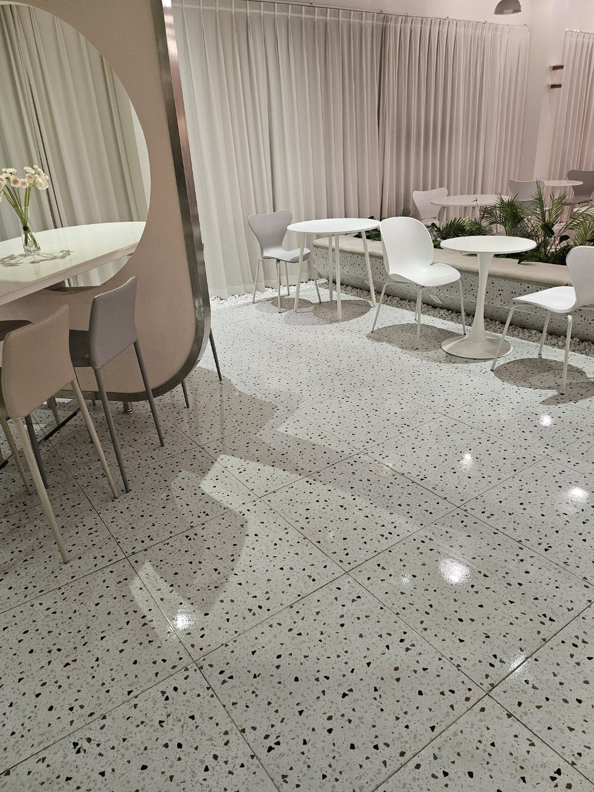
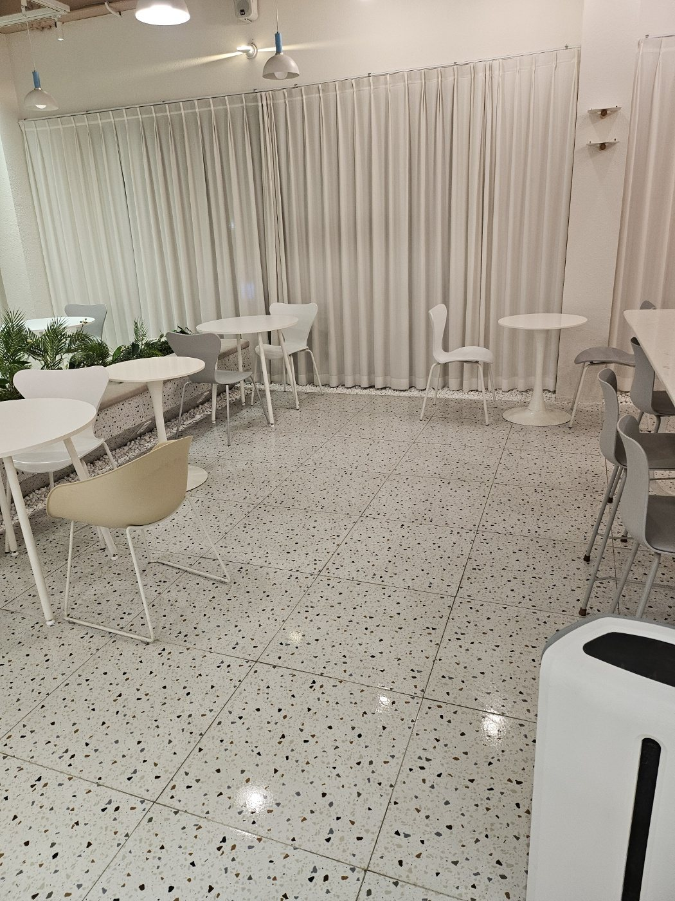
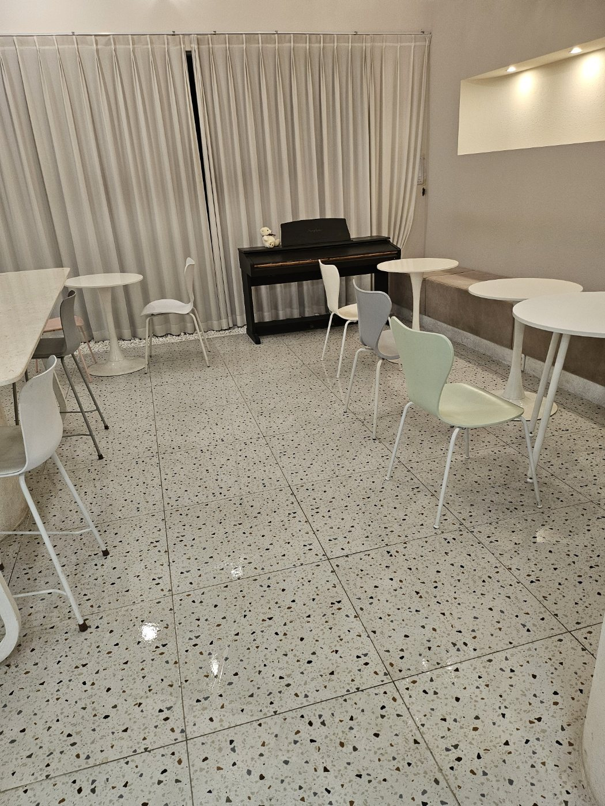
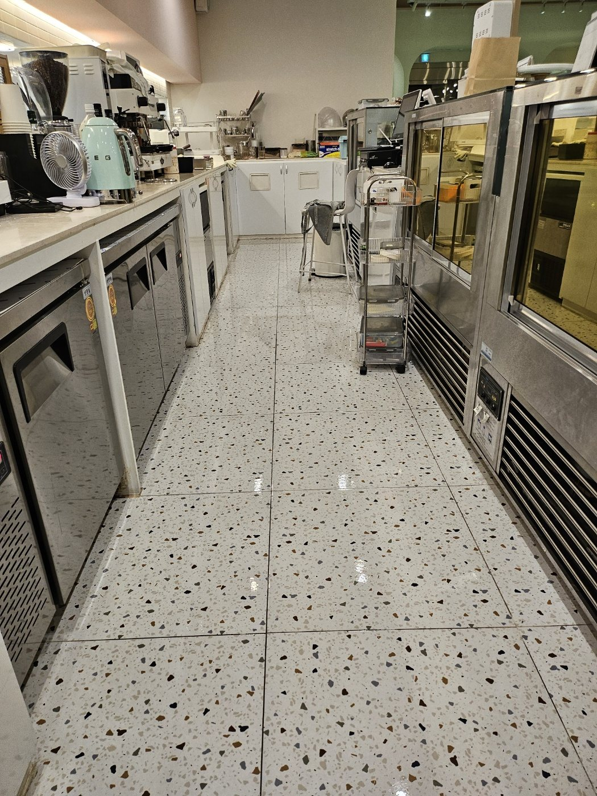

김해 카페 정기청소 | 홀·주방·바닥 관리 작업사례
김해 카페와 디저트매장처럼 고객 이용이 많은 공간을 기준으로 구성한 정기청소 작업사례입니다. 카페는 홀 바닥뿐 아니라 테이블 주변, 카운터 앞, 주방 통로와 직원 동선까지 서로 연결돼 있어 영업 후 전체 구역을 체계적으로 관리하는 것이 중요합니다.

카페 홀 바닥과 테이블 주변 관리
카페의 첫인상을 좌우하는 공간은 고객이 가장 오래 머무는 홀입니다. 테이블과 의자 하부, 고객 이동 통로, 벽면 가장자리까지 함께 확인해 바닥에 먼지와 잔여물이 남지 않도록 관리합니다.

복도와 화장실 연결 동선 정리
카페 내부 복도는 홀과 화장실, 기타 공간을 연결하면서 이동량이 집중되는 구역입니다. 벽면 쪽 먼지와 바닥 잔여 오염을 확인하고 좁은 공간일수록 가장자리까지 세밀하게 정리합니다.

카운터 앞 고객 동선 관리
카운터 앞은 주문과 결제가 반복되는 공간이라 바닥 오염이 빠르게 누적될 수 있습니다. 직원 동선과 고객 동선을 구분해 바닥 상태를 확인하고 쇼케이스 주변까지 정리합니다.

카페 홀 전체 청결감 유지
밝은 색상의 테라조 바닥은 먼지와 작은 오염이 눈에 잘 띄기 때문에 전체 면을 균일하게 관리하는 것이 중요합니다. 테이블 배치가 많은 공간은 의자 다리 주변과 벽면 쪽까지 함께 확인합니다.

테이블 좌석 구역 바닥 관리
원형 테이블과 의자가 배치된 공간은 의자 이동으로 인해 미세먼지와 오염이 바닥 곳곳에 퍼질 수 있습니다. 좌석 사이를 나눠 청소하고 식물 화단 주변과 커튼 앞쪽까지 함께 정리합니다.

휴게 좌석과 피아노 주변 정리
고객이 머무는 휴게공간은 테이블 아래, 좌석 뒤편, 피아노 주변처럼 손이 잘 닿지 않는 위치에 먼지가 쌓이기 쉽습니다. 보이는 부분뿐 아니라 가구 가장자리까지 확인해 정돈된 상태를 유지합니다.

카페 주방 통로 바닥 관리
주방은 음료와 디저트 제조가 반복되는 공간이라 바닥에 물기와 미세한 음식 잔여물이 남기 쉽습니다. 장비 사이 통로와 냉장·제조설비 주변을 확인해 직원이 안전하게 이동할 수 있도록 관리합니다.

영업 후 카페 전체 마무리
카페 청소는 홀, 카운터, 복도, 주방을 따로 보는 것보다 영업 동선 전체를 연결해서 관리해야 효율적입니다. 작업이 끝난 뒤 고객 시선과 직원 동선을 기준으로 다시 확인해 다음 영업 준비가 가능하도록 마무리합니다.